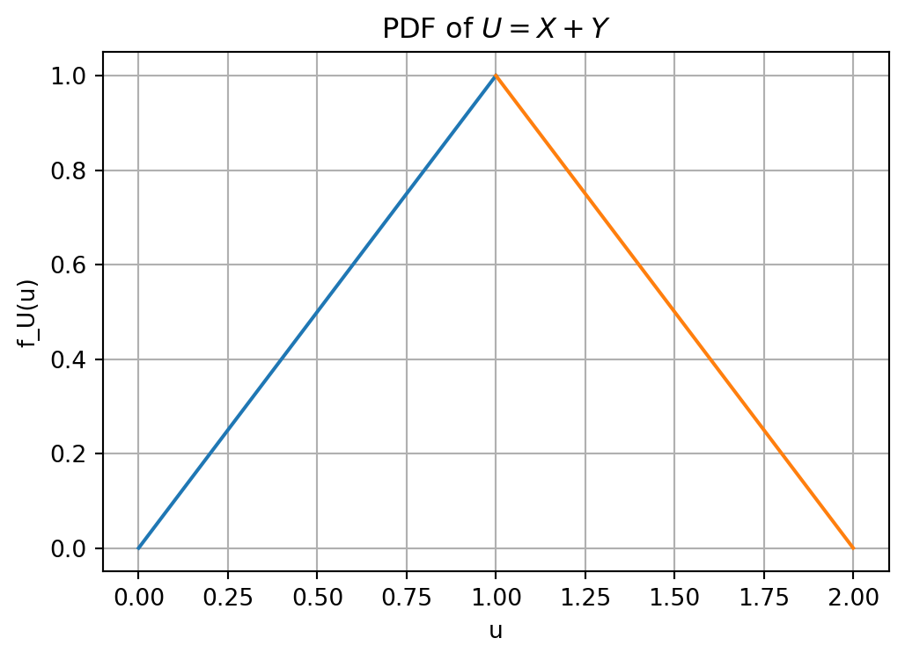

5 Chapter 5: Transformations
This chapter explains how probability distributions change when random variables are transformed by functions, sums, products, quotients, maxima, minima, and coordinate changes.
Topics. Functions of random variables; CDF method; one-dimensional change of variables; transformations of several random variables; Jacobians; convolution; quotient, product, maximum, and minimum distributions; Box–Muller method.
5.1 Overview
This section explains how to find the distribution of a new random variable created from old random variables.
In applications, we rarely observe only the original random variable. We often transform it: we square it, take logarithms, add several variables, take a maximum or minimum, form a ratio, or change coordinates. The central problem is: \[\text{given the distribution of }X,\text{ find the distribution of }Y=g(X),\] or more generally, \[\text{given the joint distribution of }(X_1,\ldots,X_n),\text{ find the distribution of }Y=g(X_1,\ldots,X_n).\]
TipMain message
A transformation changes probability by changing the set of outcomes being counted or integrated. For one variable, the main tools are the CDF method and the change-of-variables formula. For several variables, the main tool is the Jacobian determinant.
5.2 Function of One Random Variable
This section begins with the basic transformation problem for a single random variable.
Let \(X\) be a random variable and let \(g\) be a function. Define \[Y=g(X).\] Our goal is to find the distribution of \(Y\). The key idea is to translate events about \(Y\) into events about \(X\).
5.2.1 Inverse images of events
This subsection introduces the set-level viewpoint that works for both discrete and continuous random variables.
For any subset \(A\) of possible values of \(Y\), \[\mathbb{P}(Y\in A)=\mathbb{P}(g(X)\in A)=\mathbb{P}(X\in g^{-1}(A)),\] where \[g^{-1}(A)=\{x:g(x)\in A\}.\] Here \(g^{-1}\) does not necessarily mean an ordinary inverse function. It means the inverse image of a set.
Example 1 (Set inverse image). Let \(Y=X^2\). If \(A=[0,4]\), then \[g^{-1}(A)=\{x:x^2\in[0,4]\}=[-2,2].\] Thus \[\mathbb{P}(Y\in[0,4])=\mathbb{P}(-2\leq X\leq 2).\]
NoteSolution
The event \(Y\in[0,4]\) means \(X^2\in[0,4]\). This is equivalent to \(|X|\leq 2\), or \(-2\leq X\leq 2\). Therefore the probability of the event for \(Y\) is computed from the corresponding interval for \(X\).
5.2.2 Discrete transformations
This subsection gives the formula for transforming a discrete random variable.
If \(X\) is discrete and \(Y=g(X)\), then the pmf of \(Y\) is \[p_Y(y)=\mathbb{P}(Y=y)=\mathbb{P}(X\in g^{-1}(\{y\})) =\sum_{x:g(x)=y}\mathbb{P}(X=x) =\sum_{x:g(x)=y}p_X(x).\]
Example 2 (A nonlinear discrete transformation). Let \(X\) be a discrete random variable with \[\mathbb{P}(X=x)=\frac15,\qquad x\in\{-2,-1,0,1,2\}.\] Let \[Y=g(X)=2|X|.\] Find the range and pmf of \(Y\).
NoteSolution
Compute \(Y=2|X|\) for each possible value of \(X\): \[\begin{array}{c|ccccc} x & -2 & -1 & 0 & 1 & 2\\ \hline y=2|x| & 4 & 2 & 0 & 2 & 4 \end{array}\] Hence \[\operatorname{Range}(Y)=\{0,2,4\}.\] Now sum the probabilities over all preimages: \[p_Y(0)=\mathbb{P}(X=0)=\frac15,\] \[p_Y(2)=\mathbb{P}(X=-1)+\mathbb{P}(X=1)=\frac15+\frac15=\frac25,\] \[p_Y(4)=\mathbb{P}(X=-2)+\mathbb{P}(X=2)=\frac15+\frac15=\frac25.\] Therefore \[\begin{array}{c|ccc} y & 0 & 2 & 4\\ \hline p_Y(y) & 1/5 & 2/5 & 2/5 \end{array}\] The probabilities add to \(1\), so this is a valid pmf.
Practice Problem 3 (Practice: discrete transformation). Let \(X\) be uniformly distributed on \(\{-2,-1,0,1,2\}\) and let \(Y=X^2+1\). Find the pmf of \(Y\).
NoteSolution
The possible values are \[Y=X^2+1\in\{1,2,5\}.\] The preimages are \[Y=1 \Longleftrightarrow X=0,\] \[Y=2 \Longleftrightarrow X=\pm 1,\] \[Y=5 \Longleftrightarrow X=\pm 2.\] Since each value of \(X\) has probability \(1/5\), \[p_Y(1)=\frac15,\qquad p_Y(2)=\frac25,\qquad p_Y(5)=\frac25.\]
5.2.3 Continuous transformations by the CDF method
This subsection gives the most reliable method for continuous transformations: first find the CDF, then differentiate.
If \(X\) is continuous with pdf \(f_X\), then the CDF of \(Y=g(X)\) is \[F_Y(y)=\mathbb{P}(Y\leq y)=\mathbb{P}(g(X)\leq y) =\int_{\{x:g(x)\leq y\}} f_X(x)\,dx.\] If \(F_Y\) is differentiable, then \[f_Y(y)=F_Y'(y).\]
TipCDF method
To find the pdf of \(Y=g(X)\):
Write \(F_Y(y)=\mathbb{P}(g(X)\leq y)\).
Convert the event into an event involving \(X\).
Compute the probability using \(F_X\) or \(f_X\).
Differentiate with respect to \(y\).
5.2.4 Monotone change of variables
This subsection gives the standard formula when the transformation is one-to-one.
Theorem 4 (Increasing transformation). Suppose \(X\) has pdf \(f_X\) on an interval \((a,b)\). Let \(Y=g(X)\), where \(g\) is differentiable and strictly increasing on \((a,b)\) with \(g'(x)>0\). Then \[f_Y(y)= \begin{cases} \displaystyle \frac{f_X(g^{-1}(y))}{g'(g^{-1}(y))}, & g(a)<y<g(b),\\[1.2em] 0, & \text{otherwise.} \end{cases}\]
NoteProof
Because \(g\) is increasing, \[F_Y(y)=\mathbb{P}(g(X)\leq y)=\mathbb{P}(X\leq g^{-1}(y))=F_X(g^{-1}(y)).\] Differentiate with respect to \(y\): \[f_Y(y)=f_X(g^{-1}(y))\frac{\,d}{\,dy}g^{-1}(y) =\frac{f_X(g^{-1}(y))}{g'(g^{-1}(y))}.\]
Theorem 5 (General one-to-one transformation). If \(g\) is differentiable and strictly monotone, then \[f_Y(y)=f_X(g^{-1}(y))\left|\frac{\,d}{\,dy}g^{-1}(y)\right| =\frac{f_X(g^{-1}(y))}{|g'(g^{-1}(y))|}.\]
WarningCommon mistake
For decreasing transformations, use an absolute value. Densities must be nonnegative.
5.2.5 Linear transformations
This subsection records the simplest and most frequently used transformation.
Example 6 (Linear transformation of a uniform random variable). Let \(X\sim \operatorname{Uniform}(0,1)\) and let \[Y=aX+b,\] where \(a>0\). Find the distribution of \(Y\).
NoteSolution
Since \(0\leq X\leq 1\), the range of \(Y\) is \[b\leq Y\leq a+b.\] The inverse transformation is \[x=\frac{y-b}{a},\] and \[\left|\frac{\,dx}{\,dy}\right|=\frac1a.\] Since \(f_X(x)=1\) on \([0,1]\), \[f_Y(y)=f_X\left(\frac{y-b}{a}\right)\frac1a=\frac1a, \qquad b\leq y\leq a+b.\] Thus \[Y\sim \operatorname{Uniform}(b,a+b).\] If \(a<0\), the interval endpoints should be reordered, and \(Y\sim \operatorname{Uniform}(a+b,b)\).
Example 7 (Linear transformation of a normal random variable). Let \(X\sim \operatorname{Normal}(\mu,\sigma^2)\) and let \(Y=aX+b\). Find the mean, variance, and distribution of \(Y\).
NoteSolution
The expectation and variance are \[\mathbb{E}[Y]=\mathbb{E}[aX+b]=a\mu+b,\] \[\operatorname{Var}(Y)=\operatorname{Var}(aX+b)=a^2\sigma^2.\] A linear transformation of a normal random variable is still normal, so \[Y\sim \operatorname{Normal}(a\mu+b,a^2\sigma^2).\] If \(a=0\), then \(Y=b\) is degenerate at \(b\).
Example 8 (General linear density formula). Let \(X\) have pdf \(f_X(x)\) and let \(Y=aX+b\), where \(a\ne0\). Find \(f_Y\).
NoteSolution
The inverse is \[x=\frac{y-b}{a},\] and \[\left|\frac{\,dx}{\,dy}\right|=\frac1{|a|}.\] Therefore \[f_Y(y)=\frac1{|a|}f_X\left(\frac{y-b}{a}\right).\] Also, \[\mathbb{E}[Y]=a\mathbb{E}[X]+b, \qquad \operatorname{Var}(Y)=a^2\operatorname{Var}(X).\]
5.2.6 Nonlinear one-dimensional examples
This subsection develops several important nonlinear transformations: square, logarithm, chi-square, and inverse transform sampling.
Example 9 (Quadratic transformation). Let \(X\sim \operatorname{Uniform}(0,1)\) and let \[Y=X^2.\] Find the pdf of \(Y\).
NoteSolution
The function \(g(x)=x^2\) is increasing on \([0,1]\). Its inverse is \[g^{-1}(y)=\sqrt{y},\] and \[g'(x)=2x.\] Thus, for \(0<y<1\), \[f_Y(y)=\frac{f_X(\sqrt{y})}{2\sqrt{y}}=\frac1{2\sqrt{y}}.\] Therefore \[f_Y(y)=\frac1{2\sqrt{y}}\mathbf{1}_{(0,1)}(y).\] Check normalization: \[\int_0^1 \frac1{2\sqrt{y}}\,dy=\left[\sqrt{y}\right]_0^1=1.\]
Example 10 (Logarithmic transformation). Let \(X\sim \operatorname{Uniform}(0,1)\) and define \[Y=-2\log X.\] Find the pdf of \(Y\) and identify its distribution.
NoteSolution
The transformation \(g(x)=-2\log x\) is decreasing on \((0,1)\). Its inverse is \[x=e^{-y/2},\qquad y>0.\] Then \[\left|\frac{\,dx}{\,dy}\right|=\frac12 e^{-y/2}.\] Since \(f_X(x)=1\) on \((0,1)\), \[f_Y(y)=\frac12 e^{-y/2},\qquad y>0.\] Hence \[Y\sim \operatorname{Exp}\left(\lambda=\frac12\right),\] where the exponential pdf is \(\lambda e^{-\lambda y}\) for \(y\geq0\).
Example 11 (Chi-square distribution from a standard normal). Let \(X\sim \operatorname{Normal}(0,1)\) and define \[Y=X^2.\] Find the pdf of \(Y\).
NoteSolution
The transformation \(x\mapsto x^2\) is not one-to-one on \(\mathbb{R}\), so use the CDF method. For \(y\geq0\), \[F_Y(y)=\mathbb{P}(Y\leq y)=\mathbb{P}(X^2\leq y) =\mathbb{P}(-\sqrt{y}\leq X\leq \sqrt{y}) =F_X(\sqrt{y})-F_X(-\sqrt{y}).\] Differentiate: \[f_Y(y)=f_X(\sqrt{y})\frac1{2\sqrt{y}}+f_X(-\sqrt{y})\frac1{2\sqrt{y}}.\] Because the standard normal pdf is symmetric, \[f_X(\sqrt{y})=f_X(-\sqrt{y})=\frac1{\sqrt{2\pi}}e^{-y/2}.\] Therefore \[f_Y(y)=\frac1{\sqrt{2\pi y}}e^{-y/2},\qquad y>0.\] This is the chi-square distribution with \(1\) degree of freedom: \[Y\sim \chi_1^2.\] Equivalently, \[Y\sim \operatorname{Gamma}\left(\alpha=\frac12,\theta=2\right),\] using the shape-scale parameterization.
Example 12 (Inverse-transform sampling). Suppose \(U\sim \operatorname{Uniform}(0,1)\) and suppose \(Y\) has CDF \(H(y)\). If \(H\) is continuous and strictly increasing, show that \[Y=H^{-1}(U)\] has CDF \(H\).
NoteSolution
For any \(y\), \[\mathbb{P}(Y\leq y)=\mathbb{P}(H^{-1}(U)\leq y).\] Since \(H\) is increasing, \[H^{-1}(U)\leq y \Longleftrightarrow U\leq H(y).\] Thus \[\mathbb{P}(Y\leq y)=\mathbb{P}(U\leq H(y))=H(y),\] because \(U\sim\operatorname{Uniform}(0,1)\). Therefore \(Y\) has CDF \(H\).
Practice Problem 13 (Practice: inverse transform for exponential). Use inverse-transform sampling to generate an exponential random variable with rate \(\lambda\) from \(U\sim \operatorname{Uniform}(0,1)\).
NoteSolution
The exponential CDF is \[F(y)=1-e^{-\lambda y},\qquad y\geq0.\] Set \(U=F(y)\) and solve for \(y\): \[U=1-e^{-\lambda y} \quad\Longrightarrow\quad 1-U=e^{-\lambda y} \quad\Longrightarrow\quad y=-\frac1\lambda\log(1-U).\] Since \(1-U\sim \operatorname{Uniform}(0,1)\), we often write \[Y=-\frac1\lambda\log U.\] Then \(Y\sim \operatorname{Exp}(\lambda)\).
5.3 Functions of Two or More Random Variables
This section studies transformations involving several random variables, such as sums, maxima, minima, and sample means.
Let \(X_1,\ldots,X_n\) be random variables and let \[Y=g(X_1,\ldots,X_n).\] As before, the basic method is to compute the CDF \[F_Y(y)=\mathbb{P}(g(X_1,\ldots,X_n)\leq y),\] and then differentiate when a pdf exists.
5.3.1 A motivating example: binomial as a sum of Bernoulli variables
This subsection shows that many familiar distributions arise as transformations of several random variables.
Example 14 (Binomial distribution as a sum). Let \[X_1,\ldots,X_n\stackrel{\text{iid}}{\sim}\operatorname{Bernoulli}(p),\] and define \[X=X_1+\cdots+X_n.\] Find the distribution of \(X\).
NoteSolution
The random variable \(X\) counts the number of successes in \(n\) independent Bernoulli trials. Therefore \[X\sim \operatorname{Binomial}(n,p),\] and \[\mathbb{P}(X=k)=\binom{n}{k}p^k(1-p)^{n-k}, \qquad k=0,1,\ldots,n.\] The transformation is a sum: \[(X_1,\ldots,X_n)\mapsto X_1+\cdots+X_n.\]
5.3.2 Two independent uniforms on the unit square
This subsection uses geometry to find distributions of sums, maxima, and minima.
Let \((X,Y)\) be uniformly distributed on the unit square \([0,1]\times[0,1]\). Equivalently, \(X\) and \(Y\) are independent \(\operatorname{Uniform}(0,1)\) random variables.
Example 15 (Sum of two independent uniforms). Let \[U=X+Y.\] Find the CDF and pdf of \(U\).
NoteSolution
Because \((X,Y)\) is uniform on the unit square, probabilities are areas.
For \(u\leq0\), \[F_U(u)=0.\] For \(0\leq u\leq1\), the event \(X+Y\leq u\) is a right triangle with side length \(u\), so \[F_U(u)=\frac{u^2}{2}.\] For \(1\leq u\leq2\), it is easier to subtract the upper-right triangle where \(X+Y>u\). That triangle has side length \(2-u\), so \[F_U(u)=1-\frac{(2-u)^2}{2}.\] For \(u\geq2\), \[F_U(u)=1.\] Thus \[F_U(u)= \begin{cases} 0, & u\leq0,\\ \dfrac{u^2}{2}, & 0\leq u\leq1,\\[0.8em] 1-\dfrac{(2-u)^2}{2}, & 1\leq u\leq2,\\[0.8em] 1, & u\geq2. \end{cases}\] Differentiating gives \[f_U(u)= \begin{cases} u, & 0\leq u\leq1,\\ 2-u, & 1\leq u\leq2,\\ 0, & \text{otherwise.} \end{cases}\] This is the triangular distribution on \([0,2]\).
Example 16 (Maximum of two independent uniforms). Let \[V=\max\{X,Y\}.\] Find the CDF and pdf of \(V\).
NoteSolution
For \(0\leq v\leq1\), \[F_V(v)=\mathbb{P}(V\leq v)=\mathbb{P}(X\leq v,Y\leq v).\] By independence, \[F_V(v)=\mathbb{P}(X\leq v)\mathbb{P}(Y\leq v)=v^2.\] Therefore \[f_V(v)=2v, \qquad 0\leq v\leq1.\] So \[f_V(v)=2v\mathbf{1}_{[0,1]}(v).\]
Example 17 (Minimum of two independent uniforms). Let \[W=\min\{X,Y\}.\] Find the CDF and pdf of \(W\).
NoteSolution
It is convenient to use the complement. For \(0\leq w\leq1\), \[\mathbb{P}(W>w)=\mathbb{P}(X>w,Y>w).\] By independence, \[\mathbb{P}(W>w)=(1-w)^2.\] Hence \[F_W(w)=1-(1-w)^2, \qquad 0\leq w\leq1.\] Differentiate: \[f_W(w)=2(1-w), \qquad 0\leq w\leq1.\] Thus \[f_W(w)=2(1-w)\mathbf{1}_{[0,1]}(w).\]
5.3.3 Minimum of many uniforms and an exponential limit
This subsection shows how transformations can reveal limiting distributions.
Example 18 (Minimum of several uniform distributions). Let \[X_1,\ldots,X_n\stackrel{\text{iid}}{\sim}\operatorname{Uniform}(0,1),\] and define \[W_n=n\min\{X_1,\ldots,X_n\}.\] Show that \(W_n\) converges in distribution to an \(\operatorname{Exp}(1)\) random variable.
NoteSolution
For \(w\geq0\), \[\mathbb{P}(W_n>w)=\mathbb{P}\left(\min\{X_1,\ldots,X_n\}>\frac{w}{n}\right).\] For \(0\leq w\leq n\), \[\mathbb{P}(W_n>w)=\mathbb{P}\left(X_1>\frac{w}{n},\ldots,X_n>\frac{w}{n}\right).\] Using independence, \[\mathbb{P}(W_n>w)=\left(1-\frac{w}{n}\right)^n.\] As \(n\to\infty\), \[\left(1-\frac{w}{n}\right)^n\to e^{-w}.\] Thus \[\mathbb{P}(W_n\leq w)\to 1-e^{-w},\qquad w\geq0,\] which is the CDF of \(\operatorname{Exp}(1)\). Therefore \[W_n\Rightarrow \operatorname{Exp}(1).\]
5.3.4 Normal transformations
This subsection records three important transformations involving normal random variables.
Example 19 (Sum of independent normal random variables). Suppose \[X\sim \operatorname{Normal}(\mu_1,\sigma_1^2), \qquad Y\sim \operatorname{Normal}(\mu_2,\sigma_2^2),\] and \(X\) and \(Y\) are independent. Find the distribution of \(X+Y\).
NoteSolution
The sum of independent normal random variables is normal. The mean and variance add: \[\mathbb{E}[X+Y]=\mu_1+\mu_2,\] \[\operatorname{Var}(X+Y)=\sigma_1^2+\sigma_2^2.\] Therefore \[X+Y\sim \operatorname{Normal}(\mu_1+\mu_2,\sigma_1^2+\sigma_2^2).\]
Example 20 (Sample mean of normal observations). Suppose \[X_1,\ldots,X_n\stackrel{\text{iid}}{\sim}\operatorname{Normal}(\mu,\sigma^2),\] and define \[\bar X_n=\frac1n\sum_{i=1}^n X_i.\] Find the distribution of \(\bar X_n\).
NoteSolution
A linear combination of independent normal random variables is normal. The mean is \[\mathbb{E}[\bar X_n]=\frac1n\sum_{i=1}^n\mathbb{E}[X_i]=\mu.\] The variance is \[\operatorname{Var}(\bar X_n)=\frac1{n^2}\sum_{i=1}^n\operatorname{Var}(X_i)=\frac{n\sigma^2}{n^2}=\frac{\sigma^2}{n}.\] Therefore \[\bar X_n\sim \operatorname{Normal}\left(\mu,\frac{\sigma^2}{n}\right).\]
Example 21 (Chi-square distribution). Suppose \[X_1,\ldots,X_n\stackrel{\text{iid}}{\sim}\operatorname{Normal}(0,1).\] Define \[Z_n=X_1^2+\cdots+X_n^2.\] Identify the distribution of \(Z_n\).
NoteSolution
The sum of squares of \(n\) independent standard normal random variables is chi-square with \(n\) degrees of freedom. Thus \[Z_n\sim \chi_n^2.\] Equivalently, \[Z_n\sim \operatorname{Gamma}\left(\frac n2,2\right)\] under the shape-scale parameterization.
5.3.5 Transformations of exponential random variables
This subsection summarizes common transformations involving independent exponential random variables.
Example 22 (Sum of two independent exponentials). Let \(X\) and \(Y\) be iid \(\operatorname{Exp}(1)\) random variables, so \[f_X(x)=e^{-x},\qquad x\geq0,\] and similarly for \(Y\). Let \[U=X+Y.\] Find the pdf of \(U\).
NoteSolution
Using convolution, \[f_U(u)=\int_{-\infty}^{\infty} f_X(x)f_Y(u-x)\,dx.\] The support requires \(x\geq0\) and \(u-x\geq0\), so \(0\leq x\leq u\). Hence, for \(u\geq0\), \[f_U(u)=\int_0^u e^{-x}e^{-(u-x)}\,dx =\int_0^u e^{-u}\,dx =ue^{-u}.\] For \(u<0\), \(f_U(u)=0\). Thus \[f_U(u)=ue^{-u}\mathbf{1}_{[0,\infty)}(u).\] This is a \(\operatorname{Gamma}(2,1)\) distribution using the rate parameterization, or \(\operatorname{Gamma}(2,1)\) using shape-scale because the rate and scale are both \(1\) in this special case.
Example 23 (Minimum of two independent exponentials). Let \(X,Y\stackrel{\text{iid}}{\sim}\operatorname{Exp}(1)\) and let \[V=\min\{X,Y\}.\] Find the distribution of \(V\).
NoteSolution
For \(v\geq0\), \[\mathbb{P}(V>v)=\mathbb{P}(X>v,Y>v)=\mathbb{P}(X>v)\mathbb{P}(Y>v)=e^{-v}e^{-v}=e^{-2v}.\] Thus \[F_V(v)=1-e^{-2v},\qquad v\geq0.\] Therefore \[V\sim \operatorname{Exp}(2).\]
Example 24 (Ratio of exponentials). Let \(X,Y\stackrel{\text{iid}}{\sim}\operatorname{Exp}(1)\) and define \[U=\frac{X}{X+Y}.\] Show that \(U\sim\operatorname{Uniform}(0,1)\).
NoteSolution
Use the transformation \[U=\frac{X}{X+Y},\qquad T=X+Y.\] Then \[X=UT, \qquad Y=(1-U)T.\] The support is \(0<u<1\) and \(t>0\). The Jacobian is \[\left|\frac{\partial(x,y)}{\partial(u,t)}\right| =\left| \begin{matrix} t & u\\ -t & 1-u \end{matrix} \right|=t.\] The joint density of \((X,Y)\) is \[f_{X,Y}(x,y)=e^{-x-y},\qquad x,y>0.\] Therefore \[f_{U,T}(u,t)=e^{-t}t, \qquad 0<u<1,\; t>0.\] The marginal density of \(U\) is \[f_U(u)=\int_0^\infty t e^{-t}\,dt=1, \qquad 0<u<1.\] Thus \[U\sim\operatorname{Uniform}(0,1).\]
Example 25 (Difference of two independent exponentials). Let \(X,Y\stackrel{\text{iid}}{\sim}\operatorname{Exp}(1)\) and define \[W=X-Y.\] Find the distribution of \(W\).
NoteSolution
Use the density of a difference. Since \(W=X-Y\), for \(w\in\mathbb{R}\), \[f_W(w)=\int_{-\infty}^{\infty} f_X(w+y)f_Y(y)\,dy,\] where the support requires \(y\geq0\) and \(w+y\geq0\).
If \(w\geq0\), then \(y\geq0\), so \[f_W(w)=\int_0^\infty e^{-(w+y)}e^{-y}\,dy =e^{-w}\int_0^\infty e^{-2y}\,dy =\frac12 e^{-w}.\] If \(w<0\), then \(y\geq -w\), so \[f_W(w)=\int_{-w}^\infty e^{-(w+y)}e^{-y}\,dy =e^{-w}\int_{-w}^\infty e^{-2y}\,dy =\frac12 e^{w}.\] Thus \[f_W(w)=\frac12 e^{-|w|},\qquad -\infty<w<\infty.\] This is the Laplace, or double exponential, distribution with location \(0\) and scale \(1\).
5.4 Transformations of Several Random Variables and Jacobians
This section gives the general multivariable change-of-variables theorem.
The one-dimensional formula contains a derivative. In several dimensions, that derivative is replaced by the absolute value of a determinant, called the Jacobian determinant.
5.4.1 The Jacobian theorem
This subsection states the main theorem for one-to-one transformations in several dimensions.
Theorem 26 (Multivariable change of variables). Let \(X=(X_1,\ldots,X_n)\) have joint pdf \(f_X(x_1,\ldots,x_n)\). Suppose \[Y_i=g_i(X_1,\ldots,X_n),\qquad i=1,\ldots,n,\] and suppose the transformation is one-to-one on the relevant support with inverse \[X_i=h_i(Y_1,\ldots,Y_n),\qquad i=1,\ldots,n.\] Then the joint pdf of \(Y=(Y_1,\ldots,Y_n)\) is \[f_Y(y_1,\ldots,y_n) =f_X(h_1(y),\ldots,h_n(y)) \left|\frac{\partial(x_1,\ldots,x_n)}{\partial(y_1,\ldots,y_n)}\right|,\] where \[\frac{\partial(x_1,\ldots,x_n)}{\partial(y_1,\ldots,y_n)}=\begin{vmatrix} \dfrac{\partial x_1}{\partial y_1} & \dfrac{\partial x_1}{\partial y_2} & \cdots & \dfrac{\partial x_1}{\partial y_n}\\[0.7em] \dfrac{\partial x_2}{\partial y_1} & \dfrac{\partial x_2}{\partial y_2} & \cdots & \dfrac{\partial x_2}{\partial y_n}\\ \vdots & \vdots & \ddots & \vdots\\ \dfrac{\partial x_n}{\partial y_1} & \dfrac{\partial x_n}{\partial y_2} & \cdots & \dfrac{\partial x_n}{\partial y_n} \end{vmatrix}.\]
WarningSupport matters
When using the Jacobian formula, always transform the support as well as the formula. A correct density with the wrong support is not a correct answer.
5.4.2 Spacing transformation example
This subsection works through a triangular transformation from ordered variables to spacings.
Example 27 (Ordered exponential-type joint density). Let \(X_1,X_2,X_3,X_4\) have joint pdf \[f_X(x_1,x_2,x_3,x_4)=24e^{-x_1-x_2-x_3-x_4},\] for \[0<x_1<x_2<x_3<x_4<\infty.\] Define \[Y_1=X_1, \qquad Y_2=X_2-X_1, \qquad Y_3=X_3-X_2, \qquad Y_4=X_4-X_3.\] Find the joint pdf of \((Y_1,Y_2,Y_3,Y_4)\).
NoteSolution
The inverse transformation is \[X_1=Y_1,\] \[X_2=Y_1+Y_2,\] \[X_3=Y_1+Y_2+Y_3,\] \[X_4=Y_1+Y_2+Y_3+Y_4.\] The support becomes \[y_1>0, \qquad y_2>0, \qquad y_3>0, \qquad y_4>0.\] The Jacobian matrix is lower triangular: \[\frac{\partial(x_1,x_2,x_3,x_4)}{\partial(y_1,y_2,y_3,y_4)} = \begin{pmatrix} 1&0&0&0\\ 1&1&0&0\\ 1&1&1&0\\ 1&1&1&1 \end{pmatrix},\] so its determinant is \(1\).
Substitute the inverse into the original density: \[x_1+x_2+x_3+x_4 =y_1+(y_1+y_2)+(y_1+y_2+y_3)+(y_1+y_2+y_3+y_4).\] Thus \[x_1+x_2+x_3+x_4=4y_1+3y_2+2y_3+y_4.\] Therefore \[f_Y(y_1,y_2,y_3,y_4) =24e^{-4y_1-3y_2-2y_3-y_4},\] for \(y_1,y_2,y_3,y_4>0\), and \(0\) otherwise.
5.4.3 Polar coordinates and the standard normal distribution
This subsection uses the Jacobian to explain the geometry behind the Box–Muller method.
Example 28 (Polar transformation of two independent standard normals). Let \(Z_1\) and \(Z_2\) be independent standard normal random variables. Their joint pdf is \[f_{Z_1,Z_2}(z_1,z_2)=\frac1{2\pi}e^{-(z_1^2+z_2^2)/2}.\] Use the polar transformation \[Z_1=R\cos\Theta, \qquad Z_2=R\sin\Theta.\] Find the joint density of \((R,\Theta)\).
NoteSolution
The support is \[r\geq0, \qquad 0\leq \theta<2\pi.\] The Jacobian determinant for polar coordinates is \[\left|\frac{\partial(z_1,z_2)}{\partial(r,\theta)}\right|=r.\] Also, \[z_1^2+z_2^2=r^2.\] Therefore \[f_{R,\Theta}(r,\theta)=\frac1{2\pi}e^{-r^2/2}r, \qquad r\geq0, \quad 0\leq\theta<2\pi.\] This factors as \[f_{R,\Theta}(r,\theta)=\left(re^{-r^2/2}\right)\left(\frac1{2\pi}\right).\] Hence \(R\) and \(\Theta\) are independent, \[\Theta\sim \operatorname{Uniform}(0,2\pi),\] and \[f_R(r)=re^{-r^2/2},\qquad r\geq0.\] The distribution of \(R\) is Rayleigh.
Example 29 (Box–Muller method). Let \(U_1,U_2\stackrel{\text{iid}}{\sim}\operatorname{Uniform}(0,1)\). Define \[R=\sqrt{-2\log U_1}, \qquad \Theta=2\pi U_2.\] Then define \[Z_1=R\cos\Theta, \qquad Z_2=R\sin\Theta.\] Show that \(Z_1\) and \(Z_2\) are independent standard normal random variables.
NoteSolution
From the previous example, two independent standard normals have polar representation where \[\Theta\sim\operatorname{Uniform}(0,2\pi)\] and \[f_R(r)=re^{-r^2/2},\qquad r\geq0.\] The CDF of \(R\) is \[F_R(r)=\int_0^r se^{-s^2/2}\,ds=1-e^{-r^2/2}.\] Using inverse transform sampling, if \(U_1\sim\operatorname{Uniform}(0,1)\), then \[R=\sqrt{-2\log U_1}\] has this Rayleigh distribution. Also, \(\Theta=2\pi U_2\) is uniform on \([0,2\pi]\). Since \(U_1\) and \(U_2\) are independent, \(R\) and \(\Theta\) are independent. Transforming back by \[Z_1=R\cos\Theta, \qquad Z_2=R\sin\Theta\] produces the joint density \[\frac1{2\pi}e^{-(z_1^2+z_2^2)/2},\] which factors into the product of two standard normal densities. Hence \(Z_1\) and \(Z_2\) are independent standard normal random variables.
5.5 Sums, Quotients, Products, Maxima, and Minima
This section records general formulas for common transformations of two or more random variables.
These formulas are important because many statistical quantities are built from sums, ratios, products, maxima, or minima.
5.5.1 Sum of independent random variables
This subsection introduces convolution, one of the most important operations in probability.
Theorem 30 (Sum: discrete case). Suppose \(X\) and \(Y\) are independent discrete random variables with pmfs \(p_X\) and \(p_Y\). Let \[W=X+Y.\] Then \[p_W(w)=\sum_x p_X(x)p_Y(w-x).\]
NoteProof
We decompose the event \(W=w\) according to all possible values of \(X\): \[p_W(w)=\mathbb{P}(W=w)=\mathbb{P}(X+Y=w).\] Thus \[\mathbb{P}(X+Y=w)=\sum_x \mathbb{P}(X=x,Y=w-x).\] By independence, \[\mathbb{P}(X=x,Y=w-x)=\mathbb{P}(X=x)\mathbb{P}(Y=w-x).\] Therefore \[p_W(w)=\sum_x p_X(x)p_Y(w-x).\]
Theorem 31 (Sum: continuous case). Suppose \(X\) and \(Y\) are independent continuous random variables with pdfs \(f_X\) and \(f_Y\). Let \[W=X+Y.\] Then \[f_W(w)=\int_{-\infty}^{\infty} f_X(x)f_Y(w-x)\,dx.\]
NoteProof
Using the CDF method, \[F_W(w)=\mathbb{P}(X+Y\leq w) =\int_{-\infty}^{\infty}\int_{-\infty}^{w-x} f_X(x)f_Y(y)\,dy\,dx.\] The inner integral is \(F_Y(w-x)\), so \[F_W(w)=\int_{-\infty}^{\infty} f_X(x)F_Y(w-x)\,dx.\] Differentiate with respect to \(w\): \[f_W(w)=\int_{-\infty}^{\infty} f_X(x)f_Y(w-x)\,dx.\]
Practice Problem 32 (Practice: sum of two dice). Let \(X\) and \(Y\) be independent rolls of a fair six-sided die. Find \(\mathbb{P}(X+Y=7)\).
NoteSolution
Using convolution, \[\mathbb{P}(X+Y=7)=\sum_x \mathbb{P}(X=x)\mathbb{P}(Y=7-x).\] The valid pairs are \[(1,6),(2,5),(3,4),(4,3),(5,2),(6,1),\] so there are \(6\) favorable outcomes out of \(36\). Therefore \[\mathbb{P}(X+Y=7)=\frac6{36}=\frac16.\]
5.5.2 Quotient of two independent continuous random variables
This subsection gives the density formula for a ratio.
Theorem 33 (Quotient). Suppose \(X\) and \(Y\) are independent continuous random variables with pdfs \(f_X\) and \(f_Y\). Let \[W=\frac{Y}{X}.\] Then \[f_W(w)=\int_{-\infty}^{\infty} |x|f_X(x)f_Y(wx)\,dx.\]
NoteProof
Use the transformation \[W=\frac{Y}{X}, \qquad T=X.\] Then \[X=T, \qquad Y=WT.\] The Jacobian determinant is \[\left|\frac{\partial(x,y)}{\partial(w,t)}\right| =\left| \begin{matrix} 0&1\\ t&w \end{matrix} \right|=|t|.\] By independence, \[f_{W,T}(w,t)=f_X(t)f_Y(wt)|t|.\] Integrating out \(t\) gives \[f_W(w)=\int_{-\infty}^{\infty}|t|f_X(t)f_Y(wt)\,dt.\] Renaming \(t\) as \(x\) gives the formula.
5.5.3 Product of two independent continuous random variables
This subsection gives the density formula for a product.
Theorem 34 (Product). Suppose \(X\) and \(Y\) are independent continuous random variables with pdfs \(f_X\) and \(f_Y\). Let \[W=XY.\] Then \[f_W(w)=\int_{-\infty}^{\infty}\frac1{|x|}f_X(x)f_Y\left(\frac{w}{x}\right)\,dx,\] where the integral is over values \(x\ne0\) for which the densities are defined.
NoteProof
Use the transformation \[W=XY, \qquad T=X.\] Then \[X=T, \qquad Y=\frac WT.\] The Jacobian determinant is \[\left|\frac{\partial(x,y)}{\partial(w,t)}\right| =\left| \begin{matrix} 0&1\\[0.3em] 1/t&-w/t^2 \end{matrix} \right|=\frac1{|t|}.\] Thus \[f_{W,T}(w,t)=f_X(t)f_Y\left(\frac wt\right)\frac1{|t|}.\] Integrating out \(t\) gives \[f_W(w)=\int_{-\infty}^{\infty}\frac1{|t|}f_X(t)f_Y\left(\frac wt\right)\,dt.\]
Remark. Remark 35. If \(X\) and \(Y\) are not independent, replace the product \(f_X(x)f_Y(y)\) by the joint density \(f_{X,Y}(x,y)\) and use the appropriate Jacobian transformation.
5.5.4 Maximum and minimum of iid continuous random variables
This subsection derives the distributions of order-statistic extremes.
Theorem 36 (Maximum and minimum). Suppose \(Y_1,\ldots,Y_n\) are iid continuous random variables with CDF \(F_Y\) and pdf \(f_Y\).
If \[Y_{\max}=\max\{Y_1,\ldots,Y_n\},\] then \[f_{Y_{\max}}(y)=n[F_Y(y)]^{n-1}f_Y(y).\]
If \[Y_{\min}=\min\{Y_1,\ldots,Y_n\},\] then \[f_{Y_{\min}}(y)=n[1-F_Y(y)]^{n-1}f_Y(y).\]
NoteProof
For the maximum, \[F_{Y_{\max}}(y)=\mathbb{P}(Y_{\max}\leq y) =\mathbb{P}(Y_1\leq y,\ldots,Y_n\leq y).\] By independence, \[F_{Y_{\max}}(y)=[F_Y(y)]^n.\] Differentiating gives \[f_{Y_{\max}}(y)=n[F_Y(y)]^{n-1}f_Y(y).\]
For the minimum, use the complement: \[F_{Y_{\min}}(y)=\mathbb{P}(Y_{\min}\leq y) =1-\mathbb{P}(Y_{\min}>y).\] Now \[\mathbb{P}(Y_{\min}>y)=\mathbb{P}(Y_1>y,\ldots,Y_n>y)=[1-F_Y(y)]^n.\] Thus \[F_{Y_{\min}}(y)=1-[1-F_Y(y)]^n.\] Differentiating gives \[f_{Y_{\min}}(y)=n[1-F_Y(y)]^{n-1}f_Y(y).\]
Practice Problem 37 (Practice: maximum of iid uniforms). Let \(Y_1,\ldots,Y_n\stackrel{\text{iid}}{\sim}\operatorname{Uniform}(0,1)\) and let \(M=\max\{Y_1,\ldots,Y_n\}\). Find the pdf of \(M\).
NoteSolution
For \(0\leq y\leq1\), \[F_Y(y)=y, \qquad f_Y(y)=1.\] By the maximum formula, \[f_M(y)=n[F_Y(y)]^{n-1}f_Y(y)=ny^{n-1}, \qquad 0\leq y\leq1.\] Thus \[f_M(y)=ny^{n-1}\mathbf{1}_{[0,1]}(y).\]
5.6 Summary and Study Guide
This section summarizes the main transformation tools and when to use each one.
TipWhich method should I use?
Discrete transformation: group the preimages and add probabilities.
One continuous variable: use the CDF method, or use the one-to-one change-of-variables formula.
Several continuous variables: use a one-to-one transformation and the Jacobian.
Sum of independent variables: use convolution.
Maximum/minimum of iid variables: use CDF complements and independence.
Simulation from a target distribution: use inverse-transform sampling when the inverse CDF is available.
| Transformation type | Formula or method |
|---|---|
| Discrete \(Y=g(X)\) | \(p_Y(y)=\sum_{x:g(x)=y}p_X(x)\) |
| Continuous CDF method | \(F_Y(y)=\mathbb{P}(g(X)\leq y)\), then \(f_Y(y)=F_Y'(y)\) |
| One-to-one \(Y=g(X)\) | \(f_Y(y)=f_X(g^{-1}(y))\left|\dfrac{\,d}{\,dy}g^{-1}(y)\right|\) |
| Multivariable transform | \(f_Y(y)=f_X(h(y))\left|\dfrac{\partial x}{\partial y}\right|\) |
| Sum \(W=X+Y\) independent | \(f_W(w)=\int f_X(x)f_Y(w-x)\,dx\) |
| Quotient \(W=Y/X\) independent | \(f_W(w)=\int |x|f_X(x)f_Y(wx)\,dx\) |
| Product \(W=XY\) independent | \(f_W(w)=\int \dfrac1{|x|}f_X(x)f_Y(w/x)\,dx\) |
| Maximum of iid variables | \(f_{\max}(y)=n[F_Y(y)]^{n-1}f_Y(y)\) |
| Minimum of iid variables | \(f_{\min}(y)=n[1-F_Y(y)]^{n-1}f_Y(y)\) |
Practice Problem 38 (Comprehensive practice). Let \(X\sim\operatorname{Uniform}(0,1)\) and define \(Y=-\log X\). Then let \(Y_1,Y_2\) be independent copies of \(Y\) and set \(S=Y_1+Y_2\).
Find the distribution of \(Y\).
Find the pdf of \(S\).
NoteSolution
Since \(Y=-\log X\), the inverse is \(x=e^{-y}\) for \(y\geq0\), and \[\left|\frac{\,dx}{\,dy}\right|=e^{-y}.\] Thus \[f_Y(y)=e^{-y},\qquad y\geq0.\] So \[Y\sim \operatorname{Exp}(1).\]
Since \(Y_1,Y_2\) are independent \(\operatorname{Exp}(1)\) random variables, use convolution: \[f_S(s)=\int_0^s e^{-y}e^{-(s-y)}\,dy =s e^{-s}, \qquad s\geq0.\] Thus \[S\sim \operatorname{Gamma}(2,1)\] under the rate-\(1\) parameterization.
5.7 References
Casella, G. and Berger, R. L. Statistical Inference, 2nd edition.
Wasserman, L. All of Statistics.
Grinstead, C. M. and Snell, J. L. Introduction to Probability. American Mathematical Society, 2012.
Ross, S. Introduction to Probability Models, 12th edition.
These notes are based on the instructor’s Section 5 lecture notes for MATH 5010 and the listed recommended references.